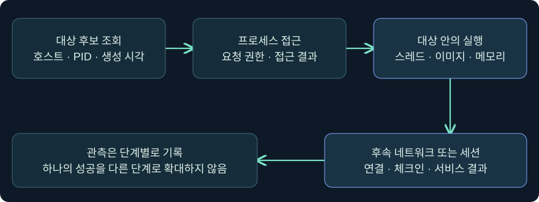
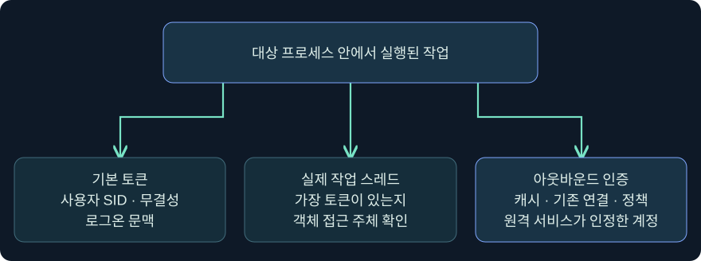
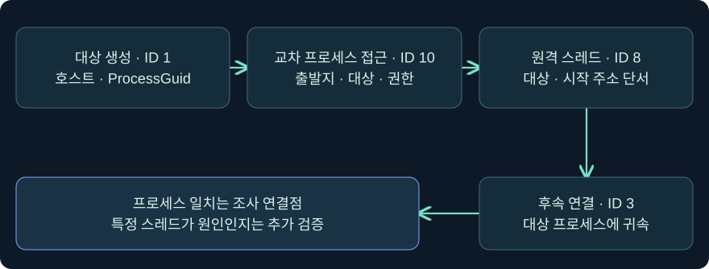

프로세스 주입과 실행 문맥의 증거 종합
프로세스 접근·실행·체크인과 토큰·원격 인증을 실제 Cobalt Strike 화면과 합성 단말 기록으로 구별합니다.
1. 같은 프로세스에서 낯선 연결이 나갔다면
문서 미리보기 프로그램이 새 외부 연결을 열었다는 경보를 받았다고 가정하겠습니다. 그 프로그램의 자체 기능이나 플러그인이 통신했을 수도 있고, 다른 프로세스가 관여했을 수도 있습니다. 조사에서는 누가 접근했는지, 어느 프로세스에서 코드가 실제로 실행됐는지, 어떤 보안 문맥이 사용됐는지, 외부 서비스가 무엇을 받아들였는지를 구별합니다.
이 강의는 3장의 Windows 실행 구조와 7장의 세션 상태를 이어 11장의 토큰·NTLM·Kerberos를 한 사례로 종합합니다. 예시 이름·PID·시간·주소는 합성입니다. 제품 화면의 조회 단계는 미실행입니다. 실제 프로세스 주입, 메모리 접근·변경, 새 세션 생성, 외부 접속, 비밀 수집과 보호 설정 변경은 수행하지 않았습니다.

2. 프로세스 주입이 바꾸는 것과 그대로인 것
프로세스는 주소 공간과 기본 접근 토큰을 갖는 실행 단위입니다. 스레드는 그 주소 공간 안에서 명령을 실행합니다. MITRE ATT&CK T1055가 분류하는 프로세스 주입은 다른 프로세스의 주소 공간에서 코드가 실행되도록 하는 기법군입니다. 실행이 기존 프로세스에서 일어나면 새 실행 파일이나 새 프로세스가 생성되지 않을 수 있습니다. 한편 새로 시작한 프로세스를 대상으로 사용하는 변형도 있습니다.
조사에서 주소 공간에 코드가 존재하는 것과 스레드가 해당 코드를 실제로 실행한 것은 서로 다른 단계입니다. 기존 모듈 로드, 프로세스 이미지 변조, 원격 스레드 생성 등 서로 다른 단서가 관측될 수 있습니다. 모든 변형을 하나의 API나 Sysmon 이벤트로 찾는다고 가정하지 않습니다.
| 관측된 사실 | 말할 수 있는 것 | 이 관측만으로 결론 내리기 어려운 것 |
|---|---|---|
| 목록에서 PID를 확인 | 조회 시점의 대상 후보 | 이후 동일 인스턴스 존재 |
| 다른 프로세스에 대한 접근 기록 | 출발지·대상 및 관측된 권한 | 실제 바이트 쓰기·실행 |
| 모듈 로드 또는 이미지 변경 | 일부 메모리·이미지 상태 변화 | 의도와 실제 후속 실행 |
| 원격 스레드 생성 | 스레드 생성과 시작 위치 단서 | 시작 루틴이 끝까지 실행됨 |
| 대상 프로세스의 네트워크 이벤트 | 해당 프로세스에 귀속된 연결 관측 | 특정 스레드의 원인·원격 작업 성공 |
3. 권한은 무결성 표시 하나로 결정되지 않습니다
Microsoft 문서에서 Windows는 프로세스 객체를 열 때 요청 권한과 보안 설명자를 비교합니다. 조회, 메모리 읽기, 메모리 쓰기·주소 공간 조작, 스레드 생성은 다른 권한입니다. 교육용 인벤토리 조회가 가능하다는 사실을 해당 프로세스의 상태를 바꿀 수 있다는 증거로 쓰지 않습니다.
호출 토큰의 특권과 활성 상태, 무결성, 대상의 보호 수준, OS 및 도구의 아키텍처 지원, 대상의 현재 생존 여부가 결과에 영향을 줄 수 있습니다. 높은 무결성은 이런 조건 중 하나를 설명하는 단서입니다. 계정이 같아도 대상이 보호되는 경우에는 권한에 제한이 걸릴 수 있습니다. 호스트가 x64여도 모든 프로세스가 x64인 것은 아니므로 대상 행의 아키텍처를 별도로 확인합니다.
4. 실행 위치와 신원을 각각 검증합니다
다른 프로세스 안에서 실행된 코드의 기본 보안 문맥은 그 프로세스의 기본 토큰을 출발점으로 이해할 수 있습니다. 다만 스레드에 가장 토큰이 적용되면 특정 객체 접근에는 그 문맥이 쓰일 수 있습니다. 네트워크 인증에서는 아웃바운드 자격 증명, Kerberos 캐시, 프로토콜 선택, 기존 서비스 연결도 결과에 영향을 줍니다.

| 비교 대상 | 읽을 증거 | 사례에서 던질 질문 |
|---|---|---|
| 기본 토큰 | 사용자 SID·무결성·Authentication ID | 어떤 프로세스의 어느 시점 값인가 |
| 스레드 문맥 | 가장 토큰 관측·작업의 스레드 | 해당 리소스 작업에 사용됐는가 |
| 네트워크 문맥 | LUID·프로토콜·캐시·서비스 로그 | 대상에서 실제로 어떤 계정을 인정했는가 |
| 제품 세션 | Beacon 연결·호스트·PID·체크인 | 새 행인가, 기존 행의 갱신인가 |
프로세스 주입, 스레드 가장, NT 해시나 Kerberos 티켓을 이용한 인증은 관측해야 할 층이 다릅니다. 프로세스의 기본 사용자 표시가 그대로여도 다른 층의 변화가 가능하며, 표시 변화 하나로 세 가지 중 어떤 행위가 일어났는지 단정할 수 없습니다.
5. 실제 Process Browser에서 조사할 프로세스를 고릅니다
실제 화면 94: Cobalt Strike Process Browser의 트리와 상세 항목

출처는 Fortra Process Browser입니다. 2026-11-05 기준 4.13 문서와 대조했습니다. 공식 삽화의 화면과 실제 설치 버전의 표시 항목은 다를 수 있습니다.
- Sessions → 승인된 실습 연결 → 우클릭 → Explore → Show Processes를 여는 미실행 절차입니다. 다중 호스트 결과와 섞이지 않도록 한 실습 호스트만 고릅니다.
- 왼쪽 목록에서 가상 호스트
LAB-EDIT08의PreviewStudy.exe, PID6216행을 클릭한다고 가정합니다. 이름만 같거나 PID만 같은 다른 인스턴스를 피하려고 호스트·이미지·PID를 함께 봅니다. - 오른쪽 표의 PID·PPID·Name·Arch·Session·User를 읽고 조회 시각을 적습니다. 공식 사진의 노란색 행은 현재 Beacon 프로세스이고 파란색 행은 선택된 항목입니다. 사진의 표에 없는 전체 경로와 생성 시각은 단말의 프로세스 생성 기록에서 확인합니다. 행 선택에는 입력 칸과 저장이 필요하지 않습니다.
- Fortra 문서가 설명하는 하단 Inject는 조회와 별개의 실행 동작입니다. 사진은 프로세스 목록과 버튼 위치를 보여 줍니다. 주입 옵션 창, 실행 버튼을 누른 직후 화면, 이 강의 사례의 결과 화면은 공식 캡처를 확보하지 못했습니다.
6. 실제 콘솔에서 읽기 전용 인벤토리의 반환을 확인합니다
실제 화면 95: Beacon Console의 입력 위치와 작업 반환
출처는 Fortra Post Exploitation입니다. 2026-11-05 기준 4.13 문서에 실린 공식 이미지이며 오래된 UI일 수 있습니다. 사진의 출력은 아래 절차를 실행한 결과와 별개입니다.
- Sessions → 승인된 연결 → 우클릭 → Interact에서 선택한 호스트와 PID를 확인합니다.
- 아래쪽 입력 줄에
help ps를 넣어 조회 명령 설명을 보는 것을 가정합니다. 같은 칸에 인수 없이ps를 넣고 Enter를 누르면 프로세스 목록을 요청합니다.ps를 선택한 이유는 특정 메모리 조작 없이 프로세스 인벤토리를 보기 위해서입니다. 별도 저장 단계는 없습니다. - 입력 줄 위의 상태 표시줄과 반환 영역을 확인합니다. 가상 기록에서는
PreviewStudy.exe의 PID6216과 x64 표시를 목록에서 찾아 봅니다. 요청 기록, Beacon 체크인, 실제 목록 반환을 각각 구별합니다. 목록이 늦게 오거나 대상 행이 사라졌다면 수신 시각과 프로세스 생성·종료 기록을 비교합니다. ps의 본문 가상값을 담은 공식 반환 화면은 확보하지 못했습니다. 조회 성공은 프로세스 목록을 받았다는 의미입니다. 해당 프로세스에 대한 메모리 변경이나 코드 실행 성공을 보여 주지 않습니다.
7. 실제 Sessions 화면에서 체크인과 프로세스 실행을 구별합니다
실제 화면 96: Cobalt Strike Sessions Table의 호스트·PID·체크인

출처는 Fortra Session and Target Visualizations입니다. 2026-11-05 기준 공식 문서의 그림이며 가상 시나리오의 체크인 결과가 아닙니다.
- Cobalt Strike → Visualization → Session Table 또는 도구 모음의 세션 표를 엽니다. 실제 사진에서 행과 열의 위치를 확인합니다.
- 승인된 기록을 검토할 때 가상 호스트
LAB-EDIT08과 PID6216에 해당하는 행이 있는지 비교합니다. 표시 순서가 바뀌어도 같은 행을 찾기 위해 호스트·PID·시각을 함께 사용합니다. 새 행인지, 기존 행의 체크인 갱신인지 세션 기록을 확인합니다. 입력 칸이나 저장 버튼은 없습니다. - Fortra의 세션 전달 문서는 대상에서 단계가 실행되더라도 통신 경로가 성립하지 않으면 새 세션이 표시되지 않을 수 있음을 설명합니다. 이 강의는 화면의 기존 연결을 읽는 가정이며, 새 연결 생성·대상 조작은 수행하지 않았습니다.
8. 단말 증거를 단계별로 조합합니다
Sysmon ID 10은 한 프로세스가 다른 프로세스를 연 관측입니다. ID 8은 다른 프로세스의 스레드 생성 관측입니다. ID 8의 StartModule과 StartFunction은 추론된 필드이므로 값이 비어 있을 수 있습니다. 비어 있다고 악성으로 판정하거나, 익숙한 모듈 이름이 있다고 정상으로 결론 내리지 않습니다. Sysmon ID 25는 일부 이미지 변조를 관측하며, 모든 주입이 ID 8 또는 ID 25로 나타나는 것은 아닙니다.

| 합성 기록 | 관측 범위 | 다음 대조 |
|---|---|---|
| 09:00:00, ID 1에서 대상 생성 | 대상의 ProcessGuid·이미지·계정 | 생성 시각과 호스트를 기준점으로 삼기 |
| 09:00:05, ID 10에서 출발지→대상 접근 | 관측된 접근 권한과 두 프로세스 | 정상 진단 프로그램 여부·센서 필터 |
| 09:00:06, ID 8에서 같은 대상의 스레드 | 새 스레드와 시작 주소 단서 | 해당 인스턴스와 코드 실행의 후속 증거 |
| 09:00:09, ID 3에서 대상의 연결 | 프로세스에 귀속된 네트워크 연결 | 다른 스레드·정상 플러그인 가설과 목적지 |
| 09:00:10, 서비스에 접근 거부 | 해당 서비스의 결과 | 인증을 인정했는지, 권한 단계에서 거부됐는지 |
이벤트가 모두 존재할 필요는 없습니다. ID 3처럼 기본 설정에서 수집되지 않을 수 있는 이벤트가 있고, 필터·수집 지연·시간 동기화 문제로 일부 로그가 없을 수 있습니다. 같은 PID가 재사용될 수 있으므로 호스트·ProcessGuid·생성 시각을 우선 대조합니다.
9. 조건을 바꿔 보고 판단 문장을 작성합니다
첫 번째 경우에 ID 10만 있고 출발지가 정상 서명된 진단 도구라고 가정합니다. 접근 자체는 조사할 수 있지만 서명과 접근 기록만으로 실행 여부나 정당성을 확정하지 않습니다. 평소 진단 시각과 조회 권한을 비교합니다.
두 번째 경우에 ID 8까지 있고 대상이 즉시 종료됐다면 원격 스레드 생성은 관측됐지만 해당 스레드가 완료됐는지와 체크인 여부는 남습니다. 세 번째 경우에 새 연결이 관측되고 대상 서비스가 다른 계정을 인정했다면, 실행 위치와 인증 신원을 별도 기록합니다. 프로세스 기본 토큰, 스레드 가장, 아웃바운드 문맥 중 무엇이 실제로 쓰였는지는 해당 작업의 추가 증거가 필요합니다.
보고 예시는 “동일 인스턴스를 대상으로 프로세스 접근과 원격 스레드 생성이 관측됐다. 후속 외부 연결은 대상 프로세스에 귀속됐다. 그 스레드가 연결을 만들었는지와 원격 서비스가 어떤 계정을 인정했는지는 미확인이다.”입니다. 단서와 입증 범위를 문장 안에서 구별하면 다음 조사자가 동일한 가설을 검증할 수 있습니다.
10. 복습과 즉시 해설
복습 1. 프로세스 목록에서 PID가 보이면 어떤 것을 입증하나요?
해설: 조회 시점에 해당 PID를 가진 항목을 봤다는 뜻입니다. 실행 이후 같은 인스턴스인지 생성 시각·ProcessGuid를 대조합니다.
복습 2. 높은 무결성이면 다른 모든 프로세스를 열 수 있나요?
해설: 객체의 접근 권한과 보호 수준이 따로 적용됩니다. 요청 권한, 호출 문맥과 대상 보호 조건을 확인합니다.
복습 3. Sysmon ID 10에서 쓰기 권한이 보이면 실제 메모리 쓰기도 입증되나요?
해설: 부여된 접근 권한과 실제 사용한 작업은 별개입니다. 쓰기 또는 후속 실행을 관측한 증거를 찾습니다.
복습 4. StartModule 값이 비어 있으면 악성으로 확정할 수 있나요?
해설: Sysmon이 그 필드를 추론하지 못한 경우일 수 있습니다. 시작 주소와 메모리·모듈 상태, 행위 문맥을 함께 확인합니다.
복습 5. ID 8이 없으면 프로세스 주입을 배제할 수 있나요?
해설: 기법과 수집 범위에 따라 ID 8이 없을 수 있습니다. 사용한 센서 설정과 관련 메모리·모듈·스레드 증거를 확인합니다.
복습 6. 대상 프로세스의 기본 토큰과 원격 서버가 인증한 계정은 항상 같은가요?
해설: 스레드 가장, 아웃바운드 자격 증명, 티켓 캐시나 기존 연결에 따라 달라질 수 있습니다. 실제 대상 서비스 기록을 확인합니다.
복습 7. 콘솔에 요청이 기록됐는데 새 세션이 안 보이면 무엇을 알 수 있나요?
해설: 요청과 체크인 사이의 상태가 미확인입니다. 작업 전달, 대상 실행, 연결 경로와 새 세션 생성의 증거를 단계별로 구별합니다.
복습 8. ID 8 뒤 같은 프로세스의 네트워크 연결이 보였습니다. 새 스레드가 만들었나요?
해설: 시간과 프로세스 인스턴스가 맞으면 관련성을 검토할 수 있습니다. 특정 스레드가 연결을 만들었다고 결론 내리려면 더 세밀한 관측이 필요합니다.
11. 공식 출처와 검증 범위
2026-11-05에 Microsoft, MITRE와 Fortra 자료를 대조했습니다. 화면은 공식 실제 캡처이며 계정·호스트·시간표는 독립 작성한 가상 사례입니다. 제품·Windows 조회와 주입·네트워크 실행은 미실행입니다.